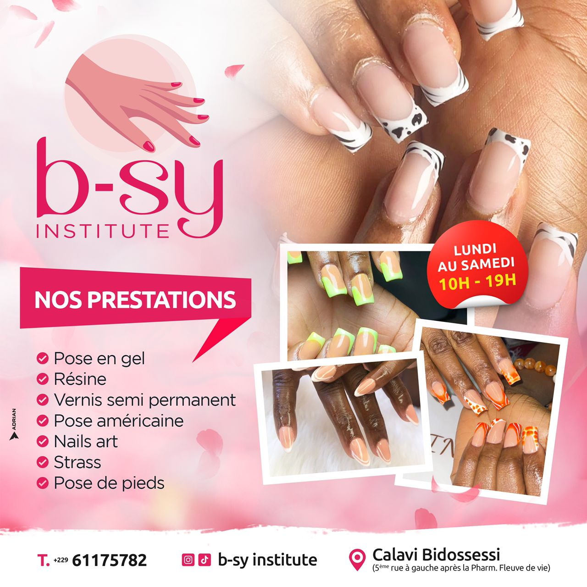

Bienvenue chez B-SY
La beauté dans
les petits détails.
Un lieu dédié à la beauté de vos mains et de vos pieds, avec une attention particulière portée à vos envies.

Votre moment, notre attention.
Spécialisé en prothésie ongulaire et en pédicure, B-SY Institute vous accompagne dans le choix de vos soins et de votre style.
Notre approche
Écouter vos préférences, vous présenter les possibilités et soigner les finitions : chaque rendez-vous est un échange.
Préparer votre visite
Vous avez repéré une couleur ou une réalisation ? Envoyez votre inspiration à l’équipe pour discuter de votre prochaine pose.
Échanger avec l’équipe